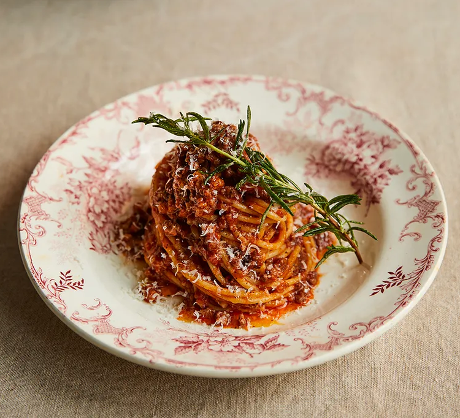
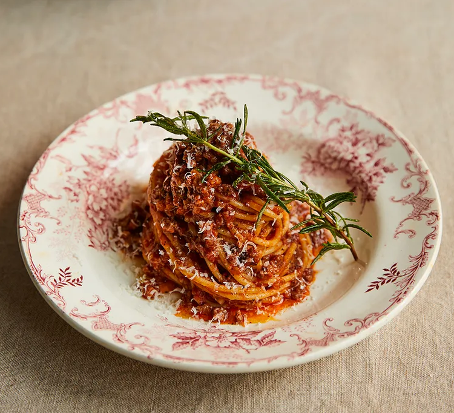

- 2 скилидки чесън
- 1 глава лук
- 2 стръка пресен розмарин
- 6 изсушен пушен бекон
- зехтин
- 500g телешка кайма
- 200ml червено вино
- 280g буркан сушени домати
- 800g консервирани сушени домати
- 500g спагети
- сирене пармезан
- екстра необработен зехтин
・Предварително затоплете печката на 180ºC ・Обелете и нарежете фино чесъна и лука, нарежете розмарина на ситно и нарежете бекона фино ・Загрейте струйка олио в тиган на средна температура, добавете бекона, розмарина, чесъна и лука и гответе за 5 минути или докато не омекне, като разбърквате от време на време ・Добавете каймата, разбивайки я с гърба на лъжица, след това гответе за 2 до 3 минути или докато не започне да потъмнява, след това изсипете виното. Нека започнат да се появяват балончета. ・Междувременно изцедете и пресипете изсушените на слънце домати в миксер, миксирайте до паста, след което добавете към тигана с доматите. Разбъркайте добре ・Покрийте с капак, след това поставете във фурната за 1 час, след 30 минути извадете капака и разбърквате - ако на този етап изглежда малко сухо, добавете 1/3 чаша вода ・Около 10 минути преди времето да изтече, гответе спагетите във вряща солена вода според инструкциите на пакета. ・След като спагетите се приготвят, отцедете ги от водата, след което се върнете в тигана с няколко лъжици болонезе, настърган пармезан и капка от екстра върджин зехтин. ・Разпределете спагетите между чинии или купи, добавете голяма лъжица болонезе към всяка, след което сервирайте с фина щипка настърган пармезан.